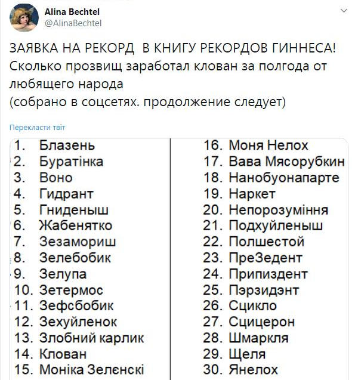
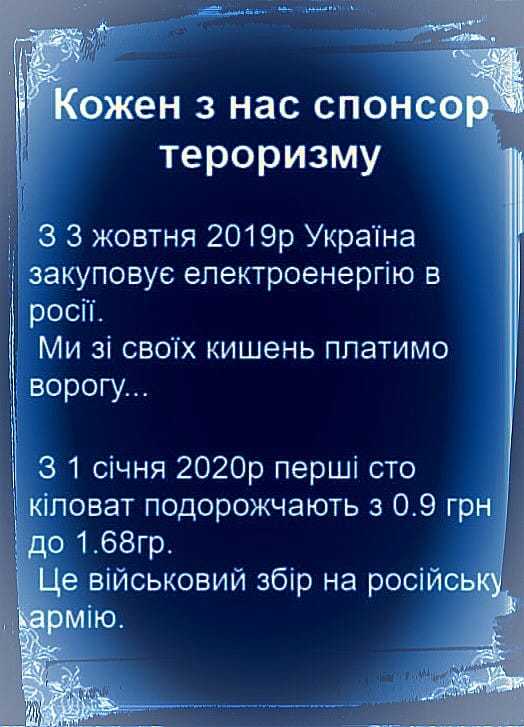

01.11.2019
Відсьогодні усі дороги в Україні уже відповідають європейським стандартам :D
ГПУ відкрила справу щодо Федини і Звіробій через скандальне звернення до Зеленського »»»
Зеленський призначив головою Тернопільської ОДА колишнього "регіонала" »»»
Рада ратифікувала Протокол про уникнення подвійного оподаткування між Україною та Кіпром »»»
Тепер "Кіноквартал" ОФІЦІЙНО може не сплачувати податки в Україні!
Самый масштабный "развод" Зеленского [►]
02.11.2019
У НАТО відмовилися від зустрічі Столтенберга зі звільненими українськими моряками »»»
Пенсионный фонд начал массово уменьшать пенсионные выплаты »»»
UPD: Мінус 500 гривень: українці почали отримувати урізані пенсії »»»

03.11.2019
"Ми сприймаємо росіян як друзів": у Норвегії заговорили про зняття санкцій з Росії »»»
Після розведення військ: у Золоте зайшли росіяни на чолі з депутатом Держдуми »»»
UPD: Реакція зеленської влади на цю провокацію - НУЛЬОВА! »»»
UPD: Після шквалу критики щодо ігнорування візиту окупанта, МЗС таки розродилося "глибокою стурбованістю"! »»»
UPD: Ірина Геращенко звернеться до СБУ через візит депутата Держдуми РФ у Золоте »»»
“Вибив зуб”: в Офісі президента побилися Баканов і Богдан »»»
UPD: Спарринг на Банковой [►]
UPD: Богдан оновив аватарку в своєму акаунті у Facebook
І ми ще після цього хочемо, щоб у світі до України серйозно ставилися? Ми хочемо, щоб у країну, якою керують клоуни і дуріки прийшли серйозні інвестори? Зелені чоловічки СВІДОМО й СИСТЕМАТИЧНО на догоду Кремлю НИЩАТЬ міжнародний імідж України!
Генштаб «завалив» будівництво сховищ зберігання боєприпасів »»»
UPD: Президент підписав указ щодо покращення умов зберігання боєприпасів на військових арсеналах та складах »»»
К распилу очередных бюджетных средств готовы!
UPD: На Вінниччині згоріли шоломи та бронежилети на 10 мільйонів »»»
UPD: На арсеналі у Балаклії прогриміли вибухи »»»
О! Уже "покращили"!
UPD: Кількість жертв вибухів біля Балаклії зросла »»»
UPD: Вибухи на арсеналі у Балаклії були контрольованими – Міноборони »»»
Троє загинули й четверо поранено - теж контрольовано? Загиблі й поранені були ЗАПЛАНОВАНІ???
04.11.2019
Кабмін затвердив проект держбюджету 2020 року до другого читання »»»
UPD: Ни зарплат, ни пенсий: как Зеленский и Гончарук обманули украинцев »»»
Богдан хотів припинити розслідування справ щодо Майдану й економічних злочинів Януковича, – Горбатюк »»»
З ГПУ звільнили слідчого, який розслідував справу про розтрату держкоштів Богданом »»»
UPD: Горбатюк: Ми йшли до оголошення підозри Богдану »»»
Загострення під Золотим: Російсько-окупаційні війська накрили вогнем артилерії українське селище, школярів рятували у бомбосховищі »»»
У центрі Харкова встановили меморіальну дошку генералу КДБ »»»
Про декомунізацію в Харкові не чули! ГПУ, СБУ і МВС традиційно МОВ-ЧАТЬ!
Поліція зі сльозогінним газом і із застосуванням сили розігнала акцію ФОПів під офісом президента »»»
Ну що зубожілі, вам не подобався "барига", то тримайте свого "слугу" і радійте - ви зробили це разом! Тепер вас за ваш вибір будуть ще й бити!
Поки Зеленський не примусить Коломойського повернути гроші, траншів МВФ не буде — WSJ »»»
UPD: При ЗЕленському, розпочався справжній розгул корупції - заява МВФ »»»
#ТакиЛох. Тепер політичне життя Зеленського повністю залежить від Путіна »»»
05.11.2019
В РНБО назвали керівництво бойовиків “нормальними та порядними професіоналами” »»»
Мендель похвалилася фото з прапорами “ЛНР” на території, звідки відступила Україна »»»
"Выгнать нахер. Утомил этот парад дебилов": "Слуга народу" Бужанський виступив проти міністра Милованова »»»
Розпочалась чергова серія ЗЕшоу для ЗЕлохів
Гончарук: Наступного року пенсії зростуть, але не дуже »»»
Коротше, ціни й тарифи їх усе одно випереджатимуть!
UPD: В Украине проверят всех пенсионеров, у части заберут деньги: "Слуга народа" приняла закон »»»
Розслідуванню масового вбивства людей на Майдані уже Труба? »»»
UPD: Передача справи про вбивства на Майдані до ДБР поховає слідство назавжди »»»
UPD: У ДБР створили спецпідрозділ для розслідування «справ Майдану» »»»
Наша пісня гарна й нова, починаймо слідство знову? Так до нового пришестя розслідувати будемо!
В Україні відкрили справу проти звільнених з полону моряків »»»
Українські державні органи заодно з Росією, не визнають рішення Морського трибуналу ООН
Прикордонник, якого Зеленський звільнив під час візиту на Закарпаття, пішов на підвищення »»»
Новий голова Нацкомісії з тарифів заявив про неминучість зростання цін на електроенергію для населення »»»
Росія вас розвела з цією формулую Штайнмаєра! Президент Литви терміново звернувся до українців »»»
06.11.2019
Масові обшуки у добровольців і ветеранів АТО: затримали військову ЗСУ »»»
UPD: Суд Києва арештував ветерана АТО Інну Грищенко »»»
UPD: Типове порушення норм законодавства - Погребиський про обшук в "Veterano Pizza" »»»
Слуги і Донбас або дурне поїхало в турне... »»»
UPD: Не подумали: у "Слузі народу" пояснили причину перебування у "безпечному" Золотому в бронежилетах »»»
Не подумали? А вони вміють думати?
“Повний совок”: в ДБР склали список, хто і коли має вітати з днем народження Трубу »»»
Почалися переслідування офіцерів через критику розведення військ »»»
Чергове порушення "перемир'я на Донбасі" військами РФ: російська ракета уражає українських бійців, які будують бліндаж »»»
Наших хлопців вивезли в поле, де вони риють окопи, а росіяни залишилися в бетонних бліндажах »»»
ХАРКІВСЬКІ ПОХОДЕНЬКИ ОДНОГО ГІДРАНТА:
Cпочатку харків'янам надали недостовірну інформацію щодо програми заходів, а потім просто проігнорували навіть тих людей, які зустрілись на шляху. Шоб "нє дєлать бубочкє нєрви"!
UPD: А харків'яни молодці! Не підкачали! До коридору ганьби підготувалися добре! »»»
Тільки ж сцикло до них так і не приїхало!
UPD: Зеленський у Харкові двічі назвав концерН Укроборонпром “концерТом” »»»
Можна Зеленського вивести з "Кварталу", але "Квартал" з Зеленського - ніколи!

UPD: Вован призначив Головою Харківської ОДА адвоката сина Авакова у "справі рюкзаків" »»»
Нє! Ну вони ж проти кумовства при владі! Еге ж!
07.11.2019
Наступ на свободу слова, у власника телеканалу "Прямий" тривають обшуки »»»
2000 МВт: cкандальный журналист обнародовал переписку Геруса с министром энергетики про импорт электроэнергии из РФ »»»
UPD: Ініційований Герусом імпорт електроенергії з РФ загрожує зупинкою українських АЕС »»»
UPD: Українські електростанції відключатимуть через поправку Геруса та російський імпорт »»»
UPD: ДТЕК зупиняє роботу Бурштинської ТЕС »»»
Люди - без роботи, а Україна - з залежністю від російської електроенергії! Ви зробили це разом, дебіли!

Перший помічник Зеленського Шефір пізно ввечері їздив до Коломойського »»»
Кирющенко, який може очолити Держкіно, вважає воїнів УПА “нацистами” і підтримує російських комуністів »»»
Росія почала завозити більше боєприпасів на тимчасово окупований Донбас »»»
Перші наслідки капітуляції й відведення військ!
«Ти обіsрався за півроку в усьому, в чому можна було обіsратися» »»»

08.11.2019
Узеленські винним у війні на Донбасі вважають... Порошенка! »»»
Ось це уже чіткий маркер того, на чиєму вони боці!
UPD: Після того, що сталося, Зеленський має писати заяву про дострокове припинення виконання обов’язків глави української держави »»»
UPD: Ключовий парламентер президента Єрмак займає позицію, що Путін не винуватий у війні на Донбасі »»»
UPD: Помічник Зеленського Єрмак посилено спілкується з Сурковим, – Безсмертний »»»
UPD: Війну на Донбасі почала Україна? Геращенко зажадала від Зеленського публічних пояснень »»»
Нардеп від Слуги народу задекларувала свою “безцінну кішку” »»»
БЛД! Йбнй цирк під куполом!
Предлагавший забрать у Украины Крым Светлаков приехал на съемки финала "Лиги смеха" Зеленского »»»
"Мені показують стовп, на якому висітиму": жінка зі Станиці Луганської розповіла про погрози проукраїнським жителям »»»
Російська мова упевнено повертає втрачені позиції на українських телеканалах »»»
Солом'янський суд Києва не задовольнив позов Супрун проти нардепа Дубінського про поширення фейків »»»
Цены на электроэнергию могут вырасти на 90% - Герус »»»
09.11.2019
Минобороны бьет тревогу: ДРГ оккупантов в "серой зоне" уже минируют территорию. Что так будет, понимали все. Кроме Президента? »»»
ОБСЄ: збільшення кількості вибухів. За наказом президента ООС здають чергові населені пункти України »»»
Раскрыт большой обман Зеленского: «Там, где разводят войска, такая стрельба стоит, что вы себе не представляете» »»»
В Станице Луганской отвод войск сделала только украинская сторона, — Порошенко »»»
"Указ о начале диктатуры". Зеленский приказал до нового года написать законы об уголовной ответственности для журналистов »»»

Щоб погасити борги, Україні доведеться продати всю землю, – Дубінський »»»
10.11.2019
Кошевая МРАЗЬ рже над ХВОРОБОЮ Петра Порошенка! »»»
ДЕГЕНЕРАТ! Інших слів немає!
Зеленский не отреагировал на победу МИД в Гааге по делу «Украина против России» »»»
А чого б це кремлівському ХОЛУЮ радіти з поразки Московії?
UPD: Ні Зеленський, ні його офіс не підтримують позов проти Росії »»»
Окупанти завдали ракетного удару по ЗСУ, багато поранених »»»
Партия "Слуга народа"" обманула избирателей и меняет идеологию на противоположную [►]
11.11.2019
Печерський суд надав ДБР доступ та дозволив знімати копії зі Стратегічного плану застосування ЗСУ »»»
UPD: Відкриття ДБР доступу до стратегічного плану застосування ЗСУ загрожує національній безпеці держави »»»
Зеленський планує підпорядкувати собі Службу зовнішньої розвідки: опубліковано законопроєкт »»»
ЗЕузурпація влади стає все страшнішою, а загроза безпеці держави все більш очевидною.
Сотрудники НАБУ сейчас находятся в Райффайзен Банке, чтобы задержать главу правления »»»
Пекельне дно! Теpоpuста Цемаха суд за Зеленського випустив. Кіборга Генерала Марченка — суд за Зеленського арештував »»»
UPD: Міноборони здивоване арештом героя ДАП Марченка, який ламав корупційні схеми »»»
UPD: Починається масова розправа і зачистка тих, хто робив реальну реформу армії »»»
UPD: Генерала Марченка в порушення закону суд помістив у цивільне СІЗО »»»
UPD: «Справа бронежилетів»: слідча експертиза проводилась не по ДСТУ »»»
Слідчий ДБР назвав воїнів АТО “ушльопками” »»»
UPD: ДБР-івський ушльопок Алексєнко Дмитро Григорович власною персоною:
UPD: Слідчого ДБР, який в переписці назвав «ушльопками» ветеранів АТО провели під “гучні аплодисменти” »»»
Мама на Maserati. ЗМІ знайшли у Дубінського та його сім'ї 24 квартири та 17 автомобілів »»»
UPD: Мама подарувала: Дубінський поповнив свій автопарк ще 4 розкішними автівками »»»
UPD: Дубинский стал долларовым миллионером на спецоперациях против Порошенко »»»
UPD: Виявляється "євробляхерів" "мутив" саме Дубінський [►]
По всей Украине начались протесты против земельной реформы, »»»
Люди экс-министра энергетики США получили в Украине месторождения нефти и газа »»»
Звіти НБУ показують, що бізнес звужується - насувається економічний колапс »»»
Поліція та НГУ не можуть зайти в Станицю після відводу ЗСУ »»»
«Руській мір» повертається. На головних сценах України почали виступати російські зірки »»»
Дмитрий Дубилет предлагает отказаться от защищенных стационарных телефонов в пользу смартфонов и мессенджеров с поддержкой постквантовой криптографии »»»
Хроніки реваншу: ДБР отримало доступ до стратегічного плану розгортання ЗСУ, суд арештував реформатора »»»
UPD: Тарас Чорновіл: Це вже навіть не державна зрада. Це пряма й успішна операція Російської Федерації в столиці України »»»
Екснардепа та ветерана АТО викликали на допит в СБУ »»»
Как спецслужбы РФ использовали КВН и 95 квартал »»»
З моменту обрання Зеленського, все йде за московським планом »»»
Андрій Піонтковський: Кремль готує громадянську війну на всій території України. Зеленський, врешті-решт, повинен це зрозуміти »»»
12.11.2019
Чиновницю з Офісу Зеленського затримали на великому хабарі »»»
Корупція в турборежимі! Криштально чесні нові ліца ще не встигли дорватися до влади, а вже беруть хабарі. Як так може бути, зебобіки може ви поясните?
UPD: Взяточница из Офиса Зеленского, которая попалась на получении $500 тысяч, отделалась домашним арестом »»»
БЕЗ ЗАСТАВИ! Просто під домашній арешт! А бойовий генерал - сидить у СІЗО і може вийти тільки якщо внесе 76 МІЛЬЙОНІВ гривень застави! Ви чиї, слуги??? А?
Зеленський дав згоду на зустріч з Путіним у Казахстані »»»
Так красиво опустити зезидента, передавши йому "запрошення" через свого сателіта - це цілком в стилі х..ла
Стефанчук назвав п'ять напрямків розвитку народовладдя в Україні »»»
Прикриваючись турботою про народовладдя, ЗЕ мостить шлях до федералізації України! "Місцеві громади повинні мати право на самовизначення"! Це як, знову (як в 1918 р.) буде Залупинська сільська республіка Засранського автономного краю України?
“Слуга народу” Бужанський в СМС нахамив В’ятровичу »»»
От таке бидло зелебобіки навибирали в Раду!
UPD: "Слуга народу" Бужанський заперечив причетність до погроз на адресу В’ятровича »»»
Ага! І я - не я, і корова не моя...
Грьобаний цирк! Депутат від ОПЗЖ Ілля Ківа розгулює по сесійній залі ВР у масці Джокера »»»
Попередній склад ВР точно був найгіршим???
UPD: Кива объяснил, зачем пришел в Раду в маске Джокера »»»
"Нафтогаз" збільшує ціну на газ для населення у листопаді на 14,7 відсотка »»»
Ну що, зубожілі, починається найцікавіше, зараз у вас ще субсидію від "бариг" заберуть, і буде вам повне, тотальне ПАКРАЩЕННЯ від вашої зеленої шобли!
Директорку Нацмузею історії, яка боролася з самобудом УПЦ МП, відсторонили з посади »»»
Верховна Рада попередньо дозволила навчання російською мовою в університетах »»»
UPD: Парламентська монобільшість зробила черговий антиукраїнський крок »»»
Сивохо предложил отменить контроль на блокпостах при въезде в ОРДЛО »»»
Зеленский – путинский инструмент ликвидации Украины »»»
13.11.2019
Слуги народу розпродають Україну оптом і вроздріб!
Верховна Рада ухвалила в першому читанні законопроєкт "Слуг народу" про ринок землі »»»
UPD: Рада прийняла закон про продаж землі. Що це означає? »»»
UPD: Земля будет у олигархов! - Аваков вывел своих ментов и разогнал митинг под Радой против аферы олигархата "продажа земли" »»»
UPD: «Это дно» — неадекватный Зеленский поблагодарил нардепов за голосование по рынку земли [►]
UPD: Парламент підтримав продаж землі через Інтернет »»»
UPD: Провладний закон про землю дозволяє Росії скупити всю Україну »»»
UPD: Мендель сравнила землю с каннабисом и заявила, что иностранцы лучше распоряжаются украинской землей »»»
UPD: Польща – 500 Га, Румунія – 100 Га, Угорщина – 300 Га, Україна – 200 000 Га. Максимальна площа ділянки у власності на людину… »»»
Завоювати не змогли, а скупити зможуть
«За законом о земле украинцы не заметили еще одну фишку»: Эксперт рассказал о новом проекте «слуг народа» »»»
Ігор Коломойський докоряє Заходу, думає про Росію і хоче Приватбанк, або компенсацію »»»
UPD: A Ukrainian Billionaire Fought Russia. Now He’s Ready to Embrace It »»»
UPD: В ЕС сомневаются относительно помощи Украине из-за Коломойского »»»
ЖОДНИХ коментарів щодо заяв свого кукловода від Зеленського НЕ-МА-Є! Чіткий сигнал Заходу: заява Коломойського - це відтепер державна політика України! Згортайте свою допомогу Україні! Ми йдемо ЗДАВАТИСЯ на милість Росії!!!
UPD: “Він не є представником влади”: У Зеленського відреагували на гучне інтерв’ю Коломойського »»»
Роздуплилися! На третій день! Не презервадент особисто, а лише його "гаварящяя дєвачка"!
UPD: ВОНО ТАКИ ПРОКИНУЛОСЯ!!! “Президент я!”: Зеленський вимагає від Коломойського не втручатись у зовнішню політику України »»»
ЧЕРЕЗ ТИЖДЕНЬ!!!
"Слуга народу" Холодов живе з сім'єю на Кіпрі і домігся ухвалення закону Ради в інтересах своєї мережі продажу сигарет у Києві, - "Схеми" »»»
Генпрокуратура засекретила інформацію про можливу участь Богдана в кримінальних справах »»»
Коломойському списали борги перед Приватбанком на 7,5 мільярда »»»
UPD: Ну... це ж суд: "слуги народу" не засмучені "списанням" 7,5 млрд боргу Коломойському »»»
Баканов підтримав продаж SIM-карток за паспортом »»»
«Все тайное становится явным». Стало зрозуміло, для чого був призначений Сивохо! Суд прийняв рішення! »»»
14.11.2019
Рада ухвалила бюджет на 2020 рік »»»
UPD: В Держбюджеті-2020 зрізали кошти на "Охматдит" »»»
UPD: Суспільному зрізали бюджет на 300 мільйонів гривень »»»
UPD: У Держбюджеті-2020 вдвічі скоротили видатки на ремонт доріг »»»
UPD: "Держави в смартфоні" не буде: у держбюджеті-2020 не вистачило коштів »»»
UPD: Зеленський не виконав жодної соціальної обіцянки »»»
UPD: Бюджет-2020 знищить реформу децентралізації »»»
UPD: Гончарук інструктує своїх "слуг" як треба голосувати, щоб забрати кошти у місцевих бюджетів знову в Київ [►]
UPD: Депутатка від "Слуги" Ляшенко не знала, що від її імені внесли правку до бюджету »»»
Пристайко заявив, що Україна може вийти з Мінських угод »»»
UPD: Порошенко відреагував на заяву Пристайка про вихід України з Мінських угод »»»
Нардеп Скороход: Через те, що я не голосувала за ринок землі, затримали мого чоловіка для видачі Росії »»»
Це та ж депутатка, яка колись розплакалась в залі ВР »»»
UPD: Скороход не працює в інтересах "Слуги народу" - Арахамія прокоментував скандал у сесійній залі »»»
У "Слуг народу" - кріпосне право? У них "пан" вирішує, "кто более матери-истории ценен"?
UPD: Арахамия пообещал лично вынести вопрос об исключении Скороход из “Слуги народа” »»»
UPD: Арахамия раскрыл имя взяточницы из «Слуги народа» »»»
UPD: Генпрокуратура объяснила задержание мужа Скороход из «Слуги народа» »»»
UPD: Лерос про скарги Скороход: «сама Анна ніх*я не свята» »»»
Суд звільнив з-під варти організатора замаху на Бабченка »»»
Як же тільки вчасно сам Бабаченко встиг втекти з країни, в якій правосуддя СКІНЧИЛОСЯ, ще й не почавшись!
"Армия, язык, вера - манипуляция": глава СБУ Баканов »»»
Голова СБУ Баканов є віруючим Московського патріархату й ходить у храм, який нещодавно відвідав відомий роспропагандист та представник Путіна »»»
Голова "Укроборонпрому" Абромавічус призначив собі зарплату у 1,5 мільйонів гривень »»»
Нові Свинарчуки дорвалися до корита. Але це вже "правильні" Свинарчуки! Не плутайте!
«Справа бронежилетів»: слідча експертиза проводилась не по ДСТУ »»»
"Вкрав $5,5 млрд": У ЄС заговорили про зупинку допомоги Україні через Коломойського »»»
15.11.2019
Близькі до влади адвокати оскаржили у Верховному суді обрання Володимира В’ятровича народним депутатом »»»
Володимир В'ятрович повинен зайняти місце депутата від "ЄС" Ірини Луценко, яка заявила про складання з себе депутатських повноважень за станом здоров'я
ЗЕслуга, який цьомкався з пропагандонами рф, вимагає перевірки 5 каналу, який займає чітку проукраїнську позицію »»»
Відмовитись від слова "сепари": Сивохо назвав п'ять кроків для повернення окупованого Донбасу »»»
Що насправді коїться на територіях, де Зеленський дав наказ відступити »»»
UPD: «Госпіталі переповнені»: Жданов про втрати ЗСУ на Донбасі »»»
Якщо Україна введе поліцію у зону розведення, бойовики зроблять так само — Путін »»»
Зі «Слуги народу» виключили двох нардепів »»»
16.11.2019
Арахамия заявил, что нардепам стоит поднять зарплату до…100 ТЫСЯЧ ГРИВЕН »»»
Кабмин разрешил повышать цены на отопление и горячую воду »»»
ПриватБанк буде приватизований, – Маркарова »»»
А відгадаймо з одного разу, хто ж стане переможцем чесного конкурсу нових власників Приватбанку!
Милованов розповів, як під час написання дисертації у США курив марихуану »»»
Расследование преступлений на Евромайдане остановится 20 ноября »»»
Зеленський здався і проведе розслідування, якого хотів Трамп — слухання в Конгресі »»»
UPD: Посол США повідомив президенту Дональду Трампу, що президент України Володимир Зеленський "loves your ass" і що Україна збирається рухатися вперед до розслідування, про яке Трамп попросив Зеленського - CNN »»»
На глазах у ребенка: в Киеве среди бела дня похитили главу Укрэксимбанка »»»
UPD: Це була СБУ. Главу Укрексімбанку не викрадали, його затримали »»»
UPD: «Бандитське викрадення з тортурами». Адвокат заявив про порушення під час затримання Гриценка »»»
UPD: Гриценка затримали за те, що він забрав кошти Януковича на користь держави »»»
UPD: Прокуратура обвинувачує главу Укрексімбанку в злочинних діях на користь Курченка, Арбузова для забезпечення інтересів Ложкіна, Порошенка, Філатова »»»
UPD: Суд відпустив керівника "Укрексімбанку" під заставу в три мільйони гривень »»»
Найманці РФ дві доби ведуть вогонь по позиціях ЗСУ в місцях розведення сил біля Богданівки та Петрівського »»»
Вова! А ти точно не лох? Бо якщо ти не лох, то ти просто ВОРОГ!
UPD: Разведение у Петровского превратилось в фактическое отступление ВСУ »»»
UPD: Хто там з ЗЕбілів верещав, що "ЗЄля принесе мир"? Бандити ДНР пересунули свої позиції ВПЕРЕД! »»»
17.11.2019
Найближчі радники Зеленського невпинно працюють на Кремль »»»
Зеленський і його радники зруйнували міжнародну коаліцію на підтримку України »»»
«Ми їх образили»: Сивохо вважає, що українці повинні вибачитися перед жителями ОРДЛО »»»
UPD: Семьи погибших героев будут оплачивать коммуналку семьям боевиков? – эксперт об опасности «особого статуса» »»»
Катери ФСБ РФ ходять за десять кілометрів від Маріуполя »»»
Міноборони вдає з себе сліпих і глухих!
Народний депутат України Анна Скороход, яку вирішили виключити із фракції "Слуги народу", розповіла, що нардепи від "СН" отримували зарплату в конвертах в розмірі від 5 до 15 тисяч доларів »»»
ПАТ «АвтоКрАЗ» до кінця 2020 року поріжуть на метал? »»»
Завод вчергове програв тендер, незважаючи на меншу ціну! Слуги урода віддали усі військові замовлення білоруському МАЗу! А виробляти українську військову техніку в підконтрольній росії Білорусі - це точно відповідає національній безпеці України?
Держава раптово відмовилась фінансувати фільм про Голодомор »»»
Здобули: Рахуємо разом. Що вже отримав Коломойський за час правління Зеленського? »»»
18.11.2019
Петру Порошенку підготували підозру: експрезиденту інкримінують перевищення службових повноважень »»»
Напередодні річниці Майдану! Знаково! Це так спеціально підгадали? І за що? За перевищення владних повноважень? А як же "разваравал всю страну"? Виявляється такої підозри просто нема? Нема чого інкримінувати! Треба хоч яку-небудь дурню "накопати"?
UPD: За підозрами ДБР проти мене стоїть команда Януковича, — Порошенко »»»
UPD: "Все погано з цією кримінальною справою": провадження ДБР проти Порошенка вже коментують за кордоном »»»
UPD: Портнов визнав, що подав позов проти Порошенка, аби дискредитувати його »»»
"Слуга народу" Шевченко знову видав гучну заяву: цього разу про пригнічення російськомовних »»»
Сепаратисти вже в Раді! Більше того - в комітеті нацбезпеки!!! »»»
«Оппоблоківець» Вадим Новинський став членом комітету з реінтеграції Донбасу »»»
Це як? Один з тих хто цю війну розв'язав буде тепер займатися реінтеграцією?
Такої неповаги в ПАРЄ ще не бачили! Під час семінару у Раді Європи українська делегація сиділа в смартфонах »»»
Депутат від “Слуги народу” відсидів термін за зґвалтування неповнолітньої і приховав цей факт від ЦВК »»»
UPD: “Судимість погашена”: Рябошапка не бачить нічого страшного в зґвалтуванні "слугою" Іванісовим дитини »»»
UPD: В ГПУ не подтвердили информацию Рябошапки о погашенной судимости Иванисова »»»
Мая ряпашапка збехавши?
UPD: Иванисов заявил о приостанавлении членства во фракции «Слуги народа» »»»
UPD: Іванісова виключили з фракції «Слуги народу» »»»
UPD: Гвалтівник Іванісов, обраний нардепом за підтримки Зеленського, відмовився скласти мандат »»»
ОПУ рапортує про зустріч з Портновим на фоні публікації "його фантазій про зґвалтування тварин" »»»
Богдана аж перекосило: колишній "слуга" розповів Зеленському про продаж округів на Чернігівщині »»»
Віце-спікер Руслан Стефанчук орендує житло у своєї ж тещі й отримує від держави за це ще й компенсацію! »»»
Нардепам роздали 3 млн грн компенсацій за житло »»»
Міністерка освіти: У нас більше вчителів, ніж потрібно »»»
Міністр, який не відстоює права своїх підлеглих, узагалі чогось вартий???
Зеленський незаконно надав Богдану держохорону - "Наші гроші" »»»
Юзік і слуги народу диктують поліції свої умови. Опубліковано аудіозапис »»»
UPD: Корявченков прокоментував скандальні записи з Кривого Рогу »»»
UPD: Арахамия попытался оправдать действия «Юзика» »»»
Зеленский приведен к власти Лубянкой и готовит Украину для оккупации Россией »»»
Украиной правят четверо: бандит, его адвокат, предатель и дурак — Пионтковский »»»
19.11.2019
Разумков заявив, що закон про Донбас готуватимуть після узгодження з Путіним »»»
Холуї відверто кажуть, що нічого вирішувати не будуть, поки їм не віддадуть наказ з Кремля
UPD: Пристайко заявив, що закон про спецстатус ОРДЛО буде узгоджений з окупаційною владою Донбасу »»»
Руководство страны молчит о подрыве на мине командира 128-й горно-пехотной бригады Евгения Коростелева »»»
Зеленський проігнорував смерть командира 128-ї бригади Євгена Коростельова »»»
Часу вшанувати загиблого офіцера не було? А на пікірування з Юлією Тимошенко час знайшовся?
Зеленський констатував “тишу” на ділянці, де загинув комбриг Коростельов »»»
Чи є межі цинізму у цієї зеленої наволочі? В тебе гинуть військові, в тебе гине командир бригади, але ти триндиш про якусь там "тишу"?!
Кінець епохи рівності: у столиці знову перекрили проспект для кортежу Зеленського »»»
"Заступниця міністра Клітіна потрапила на посаду через ліжко": Виключений зі СН депутат Поляков оприлюднив аудіозаписи Юзіка »»»
У комітет нацбезпеки ВР увійшов сепаратист Требушкін »»»
Єрмак та Новіков збрехали Волкеру та Тейлору про смерть своїх братів на Донбасі »»»
20.11.2019
“Не дає опиратися Росії”: Зеркаль йде з МЗС через Зеленського »»»
Одна з найкращих дипломатів не витримала зеленого козла, якому так хочеться прогнутися під свого кремлівсього господаря, що той навіть не дає працювати МЗС
UPD: “Я правильно зрозумів Зеркаль, що рішенням чинного Президента є НЕ чинити опір агресору?” – Ігор Кондратюк »»»
UPD: Зеркаль пішла з МЗС через підготовку відкликання позовів проти Росії »»»
UPD: Зеленський хоче миру з країною-агресором Росією – Зеркаль про "нормандську зустріч" »»»
На Дніпропетровщині почали транслювати російську пропаганду і канали “Новоросії” »»»
В Україні призупинили виплату лікарняних і декретних »»»
Труба звітує перед Богданом щодо виклику Порошенка до ДБР »»»
UPD: Журналісти "Прямого" отримали неспростовні докази справжності голосу ексдиректора ДБР на скандальних плівках »»»
UPD: ДБР відкрило на Порошенка 13 кримінальних справ! »»»
Не агресія Росії, не колаборанти, які пакунками повертаються в Україну, не Коломойський зі своїми заявами, не погрози і антиукраїнські заклики Портнова, не корупція серед слуг - все це не пріоритети, про це навіть не чули і впритул не бачать. "Посадити Пороха", який п"ять років рятував Україну - ось їхні пріоритети.
UPD: Хто замовник справ проти Порошенка? Західні ЗМІ висунули свою версію »»»
UPD: Налоговая опровергает ложь Портнова-Трубы в деле об отмывании доходов Порошенко при продаже «Кузни на Рыбальском» »»»
Генпрокурор Рябошапка подтвердил потерю материалов по делам Майдана »»»
Зеленський злякався скористатися військовим бортом »»»
Головнокомандуючий, який панічно БОЇТЬСЯ своєї армії!
21.11.2019
Зеленський відкрив міст в станиці Луганській
Ще раз! Президент! УКРАЇНИ! Відкрив міст! З ПРАПОРАМИ ЛНР!!! СКА!!! СКА!!! СКА!!! БЛД!!! ЦЕ ЯК????????? Ти під ЧИЇМИ ПРАПОРАМИ СТОЇШ??? МРАААЗЬ!!!!!
У Петрівському екскаваторами зарили бліндажі ЗСУ »»»
Це "єслі шо, ми сразу же вєрньомся на сваі пазіциі"? Куди ви повернетесь, дебіли?
UPD: ОБСЕ зафиксировала выстрелы на участке разведения в Петровском »»»
Найманці РФ у темну пору доби переміщують на нові позиції озброєння, яке підлягає відведенню »»»
Скандал з ООН: офіцерам на навчаннях розповідають, що “в Україні внутрішній конфлікт” »»»
Ще один профффесіонал в зеленській камнянді! Мустафа Найєм призначений на посаду заступника гендиректора Державного Концерну "Укрборонпром" »»»
Если правоохранители не покажут эффективной работы, их финансирование сократят в 2 раза, – Арахамия »»»
Люди мають усвідомити, що Зеленський є президентом-колаборантом »»»
22.11.2019
Богдан під час виборчої кампанії перебував у ЦВК в якості журналіста "1+1" »»»
Гончарук вважає, що в Україні немає корупції на топ-рівні »»»
Гончарук не тільки знову повторює стару брехню місячної давнини, а ще й приписує собі досягнення попередньої влади
В Україні п'ятий місяць падають обсяги промислового виробництва »»»
А ось справжні "заслуги" зеленоїдів! П'ять місяців - якраз час роботи нової "команди молодих технократів"!
НАБУ начало расследовать возможную госизмену экс-главы СБУ Грицака »»»
Трамп підтримав теорію змови, що Україна, а не РФ втручалася в американські вибори »»»
UPD: Дональд Трамп назвав президента України "Зеллінські" »»»
Ну, Моніка, воно й є Моніка!
25.11.2019
Понти від Януковича: український прем'єр полетів за мільйон гривень. За документами »»»
27.11.2019
5 місяців утримання Офісу Зеленського обійшлося українцям на 27 млн дорожче Адміністрації Порошенка »»»
28.11.2019
Зеленоїди тягнуть Україну до російського газового зашморгу!
Україна та Росія провели двосторонні газові переговори »»»
UPD: Оржель підтвердив, що веде зрадницькі переговори про прямі поставки газу з Росії »»»
UPD: Повернення до російського газу ставить крапку на євроатлантичних перспективах України »»»
Офіціант із села перевів «Слузі народу» мільйони: партія Зеленського влипла в новий скандал »»»
В Офісі президента закликали заборонити Facebook, щоб Зеленський не засмучувався через критику »»»
Власти Украины попросили президента Грузии не ехать в Киев »»»
UPD: Путин запретил Зеленскому встречаться с президентом Грузии накануне саммита НАТО »»»
“Слуга народу” закликала "прикрутити свободу слова" »»»
Це одна з тих мерзотниць з 1+1, які поливали лайном Порошенка. Але тепер їм вже свобода слова не потрібна, бо тепер вже їхнього зеленого придурка критикують...
UPD: Заяви "слуг народу" про необхідність обмежити свободу слова є ознакою автократизму »»»
UPD: В "Слузі народу" прокоментували заяву нардепа про обмеження свободи слова »»»
"А ми тут нє прі чьом!" А на іншу відповідь ніхто й не розраховував!
29.11.2019
"Слуга народу" не буде знижувати комунальні тарифи »»»
Бойовики на Донбасі повторно заміновують територію в районах розведення військ »»»
У військовій частині на Полтавщині проведуть скорочення штату »»»
Досить годувати своїх військових? Готуємося тодувати чужих?
Директор Державного бюро розслідувань Роман Труба в інтерв’ю виданню "Лівий берег" фактично визнав себе винним у систематичних порушеннях закону »»»
Трубагейт: розслідування діянь Труби НЕ БУДЕ »»»
"Україною керує герой серіалів": німецькі ЗМІ дали несподівану оцінку Зеленському »»»
30.11.2019
Обнальники, фірми-одноденки і кримінальний шлейф: хто фінансував "Слугу народу" на виборах »»»
"Сплошной пиар вместо работы!": Мережу обурило відео обговорення Зеленським тарифів на комуналку »»»
Зеленський і досі є керівником підприємства, зареєстрованого на окупованій території »»»
Ліпєцкая фабріка, гаварітє? Ну-ну...
Лорак повернулася в Україну. Хохлобидло на її концерті ляпало стоячи, пищало від захвату й пісялося від щастя »»»
70% дебілоїдів проголосувало за ліквідацію власної країни. Путін із вибором Зеленського попав у ситуацію win-win »»»